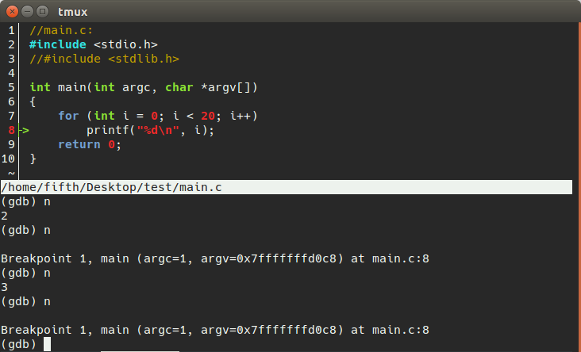
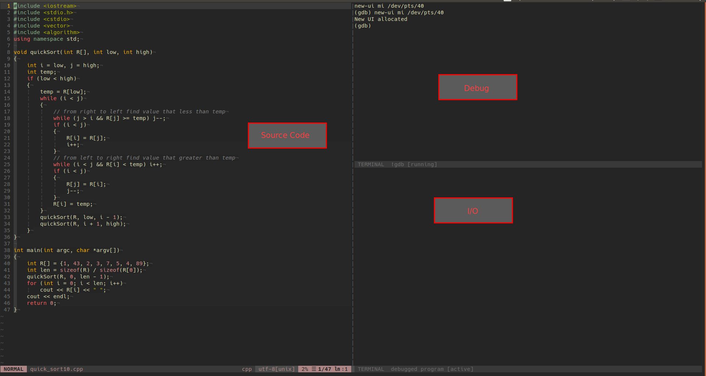

gdb basic usage and some useful gdb ui
写C或者C++程序时有时候发现出了问题，总是习惯于直接printf或者cout，如果观察的地方比较少，用这种方法还好，但是一旦需要观察的变量多了起来，就非常麻烦。写一大堆累赘的print语句很麻烦，而且会让自己的程序变得混乱。
知道gdb这个linux调试工具是很久之前的事情了，但是那个时候还是print流派（或者不想付出学习新事物的时间，觉得print还能应付）,但是现在因为需求的变化，在慢慢使用gdb的过程中，发现确实非常好用，也慢慢开始变得熟练了起来。
gdb的一些基本命令
注意: []中是可以省略输入的字母。
设置断点：
b[reak] 行号删除断点：
delete 断点id删除所有断点:
delete展示所有断点信息:
i[nfo] b[reakpoints]注意想要使用gdb，在编译的时候需要在最后加上
-g选项, 以便生成的程序中带有调试信息。gcc main.c -o main -g运行程序:
r[un]查看变量的值:
p[rint] 变量名查看变量类型:
ptype 变量名单步执行
nextstep
两者的区别是next遇到函数不会进入函数内部，step会执行到函数内部。
查看堆栈内容:
i[nfo] frame查看栈帧：
backtrace查看全局变量和静态变量：
info variables查看当前stack frame局部变量:
info locals查看当前stack frame参数：
info args选取待debug文件:
file xxx有时候debug跑过了我们想要的看的信息所在处，这个时候我们想要回退一下,gdb也有这个回退的功能:
run之后输入
record命令启动记录回放接下来就可以使用
reverse-next…, 或者直接rn关闭进程记录回放:
reverse stop执行到下一个断点:
continue: resume execution and continue until a breakpoint is hit.
gdb图形化界面
gdbtui
gdbtui是gdb自带的命令行界面。
界面开启: gdbtui -q 程序名
默认情况下，GDB TUI 模式会显示 command 窗口和 source 窗口，如上图所示，还有其他窗口，如下列举的四个常用的窗口：
（cmd）command 命令窗口，可以输入调试命令
（src）source 源代码窗口， 显示当前行、断点等信息
（asm）assembly 汇编代码窗口
（reg）register 寄存器窗口
cgdb
- 比gdbtui更好的一点是对于源码会有高亮，而且界面更加光滑。
- 
安装: sudo apt-get install cgdb
使用了vi的模式, 基本使用方法如下:
esc进入cgdb modei进入gdb mode- 在代码处窗口使用
空格设置或取消断点 - 调整窗口大小`:set winsplit=’style’
- 退出
quit<ctrl-d>
在gdb中调试带有scanf语句时如同陷入了死循环，这个时候在cgdb中需要
1. 按下esc后按下T，会出现一个新窗口，在这里面输入要输入的东西
2. 然后再esc后i进入到gdb mode即可。
vim + gdb(best of all)
需要的环境:
- vim(v8.1+)
- gdb(v7.2+)
这一篇是安装gdb-9.2的文章。
这个用着的体验是三个中较好的一个，主要是窗口之间的联动很不错，刷新界面也很顺滑。

可以看到有三个窗口：
- 源码窗口: 可以在源码窗口对应位置输入
:Break打断点 - Debug窗口: 这里输入gdb命令进行各种查看
- I/O窗口: 当源码中有输入语句时，在这里进行输入
学习gdb的资源
- RMS’s gdb Debugger Tutorial, 这个教程很简洁。